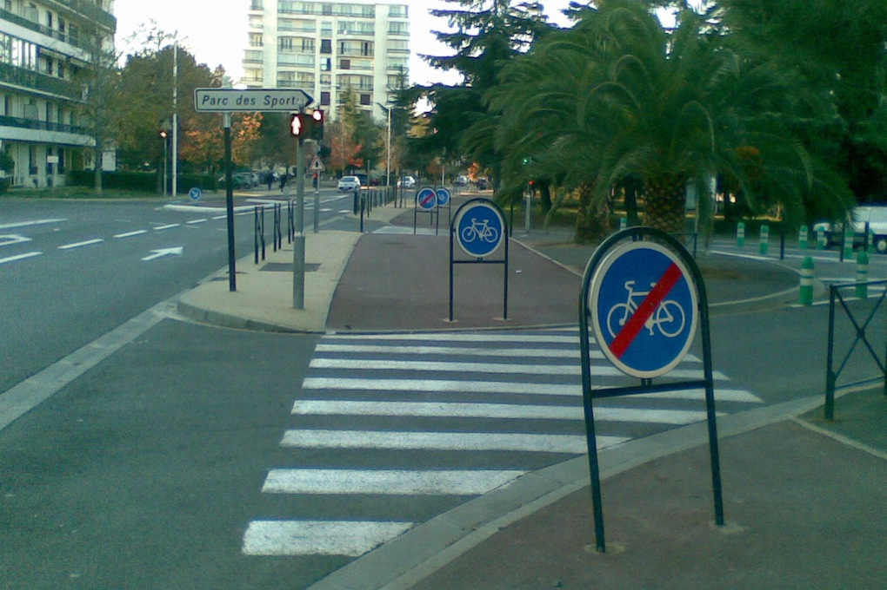

Jean Zay
Loïc Estève

\(\)
Context
- quick iteration is key
- sending an email each time you hit a stumbling block not really an option …
Users
Possible vs convenient
Possible vs convenient
Possible vs convenient
Adapt to a new environment
Home sweet home: local machine + GPU or local cluster.
Adapt to a new environment
Jean Zay:
Bad analogy, you still live in multiple places.
Examples
- miniconda rather than module
- jean-zay{1,2,3} and tmux
- idrjup vs native Jupyter experience
- plenty others …
HPC and IA users
Convenience and flexibility is way more important than pure performance!
Science needs to rethink how it interacts with big data: Five principles for effective scientific big data systems (https://arxiv.org/pdf/1908.03356.pdf)
Not only IA : common to a lot of scientific workflows see Pangeo for examplePut another way, science does not need a train, it needs an all terrain vehicle
Summary
- it works rather well (GPUs available instantly with good (2-3x) performances compared to local cluster
- how to improve usability?
- big incertitude on future evolution and Jean Zay positioning
- positive interactions with User Support so far, but a lot to be done still, how we chose priorities, and we keep the momentum going
Pangeo
- JupyterHub on HPC cluster (deployment at CNES)
- Dask
- geosciences users but generic tools
- very good place to collaborate between sys-admins (NCAR, NASA, CNES, etc …) and users